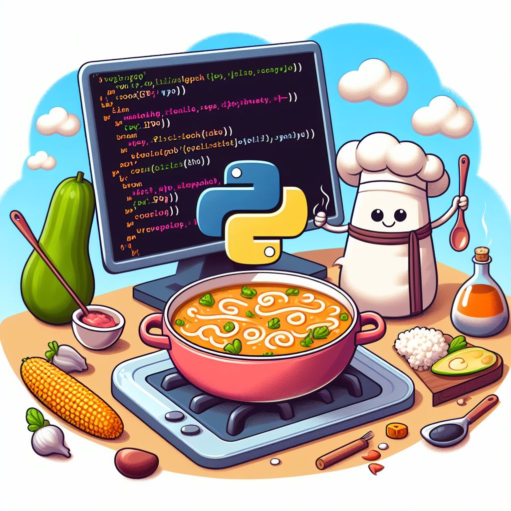
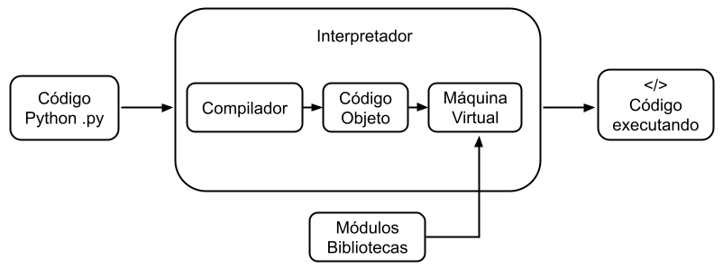

Capítulo 1: Introdução à programação em Python#

O que é programação de computadores?#
Programar computadores é a arte e ciência de conceber e criar conjuntos de instruções que capacitam computadores a realizar tarefas específicas. Esse processo envolve a expressão lógica de algoritmos por meio de uma linguagem de programação, atuando como a ponte entre a mente humana e a máquina.
Essa habilidade é fundamental para aqueles que buscam atuar no universo da computação, desempenhando um papel essencial em diversas disciplinas, como engenharia, ciência, negócios, saúde, educação e entretenimento. A capacidade de programar não apenas possibilita a automação de processos, mas também estimula a resolução criativa de problemas e impulsiona a inovação tecnológica.
Na prática da programação, os desenvolvedores convertem conceitos abstratos em linguagem compreensível pelos computadores, proporcionando-lhes a habilidade de executar tarefas complexas. Essa interação entre humanos e máquinas desempenha um papel fundamental na contínua evolução da sociedade digital, moldando desde avanços científicos até transformações sociais significativas.
A habilidade de programar transcende a mera condição técnica, transformando-se em uma ferramenta importante para explorar novas ideias e o aprimoramento pessoal. Filosoficamente falando, programar é também uma forma de enxergar o mundo sob diferentes perspectivas, processos e abstrações.
Dentro do contexto do Python, esta é uma linguagem considerada de alto nível, sendo interpretada e multiparadigma. Tal caracterização implica que o Python destaca-se por sua facilidade de aprendizado e uso, sendo aplicável a uma ampla gama de propósitos. Sua versatilidade se destaca ainda mais pela capacidade de suportar diversos paradigmas de programação, proporcionando aos desenvolvedores uma abordagem flexível e adaptável para resolver problemas em diferentes domínios.
O Python é uma linguagem de programação que desempenha papéis significativos em diversas áreas. A seguir, um breve resumo de algumas dessas possibilidades:
Engenharia e Ciências: Utilizado em simulação, análise e visualização de dados, assim como em projetos de aprendizado de máquina. Sua sintaxe clara e concisa, bem como sua ampla biblioteca de módulos científicos, tornam-o uma escolha popular para tais abordagens.
Negócios: Como uma ferramenta essencial para a análise de dados, automação de processos e desenvolvimento de aplicativos web. Sua flexibilidade e eficiência o tornam uma escolha versátil para soluções empresariais.
Educação: O Python é a linguagem de programação mais popular para o ensino de programação em escolas e universidades. Sua sintaxe simples e intuitiva torna-o uma linguagem fácil de aprender, mesmo para iniciantes.
Entretenimento: É uma linguagem de programação versátil e robusta que é frequentemente utilizada na criação de jogos, aplicativos móveis e outros softwares de entretenimento. Sua flexibilidade e robustez permitem que seja usada para criar aplicações de alta qualidade e de todos os tipos.
Saúde: Fortemente utilizado em análise de dados médicos e desenvolvimento de softwares especializados e pesquisa médica. Sua capacidade analítica e adaptabilidade o tornam uma ferramenta valiosa para a pesquisa e a inovação em saúde.
Python é uma linguagem de programação que atende a uma ampla gama de necessidades, desde automatização de tarefas repetitivas até desafios avançados. Suas aplicações incluem automação, análise de dados, desenvolvimento de jogos, inteligência artificial, automação de redes, aplicações científicas, desenvolvimento de aplicativos de desktop e web, construção de APIs, segurança cibernética, simulações científicas e matemáticas, Internet das Coisas (IoT) e produção de mídia. A flexibilidade do Python o torna uma ferramenta indispensável em diversas áreas, proporcionando uma base sólida para inovação no cenário tecnológico atual. Dominar Python não é apenas uma habilidade essencial, mas também uma maneira de explorar as constantes inovações e desafios deste mundo rápido e tecnológico.
O que você precisa para começar?#
Para iniciar seu aprendizado em Python, além desta documentação, é fundamental contar com os seguintes requisitos:
Computador com Acesso à Internet: Recomenda-se utilizar um computador com conexão à internet para facilitar o download de pacotes adicionais e o acesso à documentação online, enriquecendo sua experiência de aprendizado. No entanto, é válido destacar que é possível programar em Python em um ambiente offline, o que se torna uma opção viável em situações em que a conexão à internet não está disponível.
Editor de Texto ou IDE (Ambiente de Desenvolvimento Integrado): Escolher um editor de texto que atenda às suas preferências e necessidades. Pode ser um editor simples como o Notepad ou algo mais avançado como o Sublime Text, Atom, Visual Studio Code, ou editores online como o Replit, Google Colab ou o Jupyter Notebook. Além disso, o PyCharm é uma poderosa IDE específica para Python que oferece recursos avançados e é amplamente utilizada por desenvolvedores.
Interpretador Python: Fazer o download do interpretador Python diretamente do site da Python Software Foundation (https://www.python.org/). Alternativamente, você pode utilizar ambientes online como o Replit, que já incluem um interpretador Python e um editor de texto integrados.
Equipado com esses recursos, você estará pronto para explorar e aprimorar suas habilidades em Python. Seja trabalhando localmente em seu computador ou em ambientes online, você terá a flexibilidade necessária para mergulhar no mundo da programação, adaptando-se ao seu estilo de aprendizado preferido.
Observação: O Python é uma linguagem de programação interpretada, ou seja, seu código é executado diretamente pelo interpretador, sem ser convertido para um formato de código de máquina. Isso torna o Python uma linguagem mais fácil de aprender e usar, pois não é necessário compilar o código antes de executá-lo.
Escrevendo seu primeiro programa em python#
Neste material introdutório, será apresentado um exemplo conciso de um programa em Python que realiza a soma de dois números e exibe o resultado na tela. O arquivo pode ser nomeado “soma.py”, e o código é o seguinte:
a = 1
b = 2
soma = a + b
print(soma)
3
Neste exemplo didático, valores são atribuídos às variáveis a e b. Posteriormente, uma nova variável chamada soma armazena o resultado da adição desses valores. Finalmente, o comando print é utilizado para exibir o resultado da soma.
Aqui está a explicação de cada linha do código:
a = 1: Atribui o valor inteiro 1 à variávela. Variáveis armazenam dados em Python.b = 2: Atribui o valor 2 à variávelb. Agora,acontém 1 ebcontém 2.soma = a + b: Cria a variávelsomae atribui a ela a soma dos valores emaeb, resultando em 3.print(soma): Utiliza a funçãoprintpara exibir o valor armazenado emsoma, que é 3.
Resumidamente, o programa define dois valores 1 e 2 em duas variáveis a e b, realiza a soma desses valores e armazena o resultado em uma terceira variável soma, e finalmente, imprime o resultado 3 na tela.
O que são variáveis?
São identificadores nomeados que armazenam e representam dados, essenciais para a manipulação dinâmica de informações em um programa.
O que são funções?
São blocos de código reutilizáveis que realizam tarefas específicas. A função print foi usada para exibir informações no console ou terminal.
Para executar um código Python, algumas etapas são importantes, veja abaixo:
Escreva o código em um editor de texto.
Salve o arquivo como “.py”.
Abra um terminal ou prompt de comando.
Navegue até o diretório do arquivo.
Execute com
python nome_do_arquivo.py.Observe a saída no terminal.
python soma.py
A saída será o número 3, resultado da soma de 1 e 2.
Como um programa em Python funciona?#
O processo de execução de um código Python no computador é composto por várias etapas, cada uma desempenhando um papel fundamental. Tudo começa com o desenvolvimento do código fonte, usualmente armazenado em arquivos com extensão “.py”. Esse código é então submetido ao interpretador Python.
O interpretador é o programa encarregado de ler e processar o código fonte. Ele converte o código Python em código objeto (bytecode), uma forma intermediária que é independente da arquitetura do hardware. Este bytecode é uma representação de baixo nível que servirá como entrada para a Máquina Virtual Python (PVM).
A PVM é a camada que efetivamente executa o programa. Ela gerencia a execução do bytecode, cuida do gerenciamento de memória e interage com o sistema operacional. Além disso, algumas implementações do interpretador Python, como o CPython, podem incorporar um Compilador Just-In-Time (JIT).

Figura: Funcionamento Interno do Python.
Estrutura básica de um programa em Python#
Um programa em Python segue uma estrutura básica, um algoritmo, que é uma sequência de passos definidos para realizar uma tarefa. Similar a uma receita culinária, o algoritmo tem entrada (dados), processamento (passos a seguir), e saída (resultado).
Conceitualmente, a estrutura fundamental de um programa Python é:
def main():
# Bloco de código principal
if __name__ == "__main__":
main()
main(): Função principal do programa, chamada quando o programa é executado.Bloco de código principal: Onde a execução do programa ocorre, identado para indicar que faz parte do bloco principal.
if __name__ == "__main__":: Verifica se o arquivo está sendo executado como um programa principal, garantindo que a funçãomain()seja executada.
Exemplo de um programa básico:
def main():
print("Hello, world!")
if __name__ == "__main__":
main()
Para executar, salve o código em um arquivo “.py”, como “hello_world.py”, e no terminal, execute:
python hello_world.py
Lembre-se da importância da formatação adequada (indentação) para indicar a estrutura do programa. A consistência, preferencialmente utilizando quatro espaços por nível, é recomendada pela PEP 8. Essa prática aprimora a legibilidade e mantém um estilo uniforme.
Exemplo aprimorado: capturando nome e idade#
Vamos aprimorar nosso código inicial para aprender a interagir com o usuário. Neste exemplo, criaremos um programa que solicita e armazena o nome e a idade do usuário, para então exibir essas informações. Siga os passos abaixo:
Crie um novo arquivo para armazenar o código do programa.
Copie ou digite o seguinte código no arquivo:
nome = input("Qual é o seu nome? ") idade = input("Qual é a sua idade? ") print(nome) print(idade)
O código utiliza a função
inputpara solicitar que o usuário insira seu nome e idade. Os dados fornecidos são armazenados nas variáveisnomeeidade, respectivamente. Em seguida, o programa imprime essas informações na tela.Salve o arquivo e execute-o usando o interpretador Python.
O programa solicitará que você insira o nome e a idade.
Qual é o seu nome? Ana Maria Qual é a sua idade? 25
Após fornecer as informações, o programa imprimirá o nome e a idade na tela.
Ana Maria 25
Este exemplo ilustra o uso da função input para interagir com o usuário, capturando dados e exibindo as informações posteriormente. A utilização de input é fundamental para criar programas interativos e dinâmicos.
Estratégias cientificamente fundamentadas para estudar programação#
Estudar programação é uma tarefa desafiadora, mas também gratificante. Com uma abordagem estruturada e focada, é possível aprender os conceitos básicos e avançar rapidamente na carreira de desenvolvimento de software. Aqui estão algumas estratégias respaldadas por princípios de aprendizagem e cognição que podem ajudá-lo a aprender programação de forma mais eficaz:
Repetição espaçada: A repetição espaçada é uma técnica de aprendizado que envolve revisar conceitos em intervalos crescentes, fortalecendo a retenção a longo prazo. Utilize programas de flashcards ou aplicativos de repetição espaçada para implementar essa técnica.
Interleaving: O interleaving é uma técnica que envolve misturar diferentes tópicos durante o estudo. Isso evita a dependência excessiva de um único conceito e promove a aplicação flexível de conhecimentos. Alternar entre tópicos relacionados durante as sessões de estudo é uma prática eficaz.
Prática ativa: Engaje-se em práticas ativas, como resolver problemas e desenvolver projetos. Essa abordagem estimula a aplicação prática do conhecimento, consolidando a compreensão e fortalecendo as habilidades práticas.
Compreensão profunda: Foque na compreensão profunda dos conceitos, indo além da memorização para entender os princípios subjacentes. Concentre-se no “porquê” de algo funcionar, não apenas no “como”.
Foco e mínima interrupção: Mantenha sessões de estudo focadas, minimizando interrupções para preservar a profundidade da concentração. Escolha ambientes tranquilos e utilize técnicas de meditação para melhorar a concentração.
Aprendizagem baseada em problemas: Aborde a programação como resolução de problemas, tornando a aprendizagem mais contextual e eficaz. A resolução prática de desafios promove a aplicação real dos conceitos.
Recursos diversificados: Utilize diversos recursos de aprendizagem, como livros, vídeos, tutoriais interativos e cursos online. Essa variedade enriquece a compreensão dos tópicos.
Espaço para reflexão: Reserve tempo após o estudo para reflexão, consolidando o conhecimento e aplicando-o a novas situações. Escrever um diário de aprendizado ou discutir com um mentor pode ser útil.
Revisão regular: Mantenha o conhecimento fresco na memória por meio de revisões regulares. Crie um cronograma ou utilize aplicativos de revisão para identificar lacunas na compreensão.
Aprendizagem colaborativa: Participe de grupos de estudo, fóruns online ou projetos colaborativos. A aprendizagem colaborativa proporciona feedback valioso e a oportunidade de compartilhar ideias.
Ao seguir essas estratégias, você pode aumentar suas chances de sucesso no aprendizado de programação e desenvolver uma base sólida de habilidades.